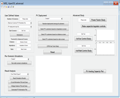

Date of Publication:
2015-12-30Version Information:
Initial version.Model Accessibility:
Model is available by contacting the POC.Proprietary Documentation:
Not proprietary.Model Symbol:
N/AAccreditation:
N/AType/Category of Model:
Used for distribution systems.Brief Theoretical Background:
Various incentive mechanisms have stimulated the grid integration of distributed energy resources (DERs). However, the high DER penetration will bring challenges to the existing power grid. Hosting capacity is defined as the total DER capacity that can be accommodated on a given feeder without violating operational constraints. Understanding the hosting capacity of a feeder can help utilities to make timely decisions for DER integration requests and ensure the distribution grids to operate appropriately. This software provide the impact analysis result of DER penetration on distribution feeders, and can estimate DER hosting capacity of distribution feeders based on a stochastic analysis approach. Besides, this software provides multiple approaches that can help increase PV hosting capacity, including selecting DER locations, adjusting voltage control devices, applying volt-var control and volt-watt control using smart inverters, etc. And importantly, this software is applicable to any distribution feeder that is modeled using OpenDSS. In sum, this software can help users (such as utilities, vendors, etc.) to understand the DER hosting capacity of distribution feeders from multiple aspects and develop strategies to increase DER hosting capacity. There are five functionalities designed:
List of References:
Model Specifications:
DERHCAT is applicable to all feeders that are modeled using OpenDSS by following the instructions provided.Model Dependencies:
OpenDSS installed, MATLAB runtime installed.Interfacing Information:
The tool is packaged into MATLAB executable. All intrinsic codes are written in MATLAB .m files. Input information is OpenDSS system model. Outputs include both hosting capacity value and detailed results generated from the study, also include figures and excel summaries.Diagrammatic Representation:
Interfacing Capabilities for HIL Simulations:
None used or planned.Model Validation:
DERHCAT has been tested on multiple real utility distribution feeders, and its performance has been validated.Metrics for validation:
Please refer to [1] and [2] for details.